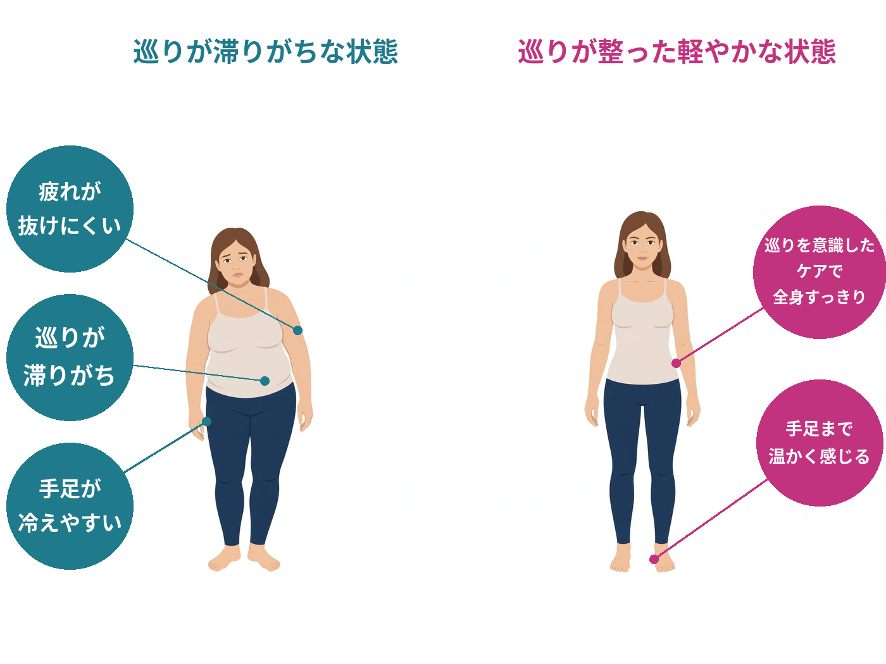

代謝低下・痩せにくい
美容整体ステラ・ポラリス東三国｜大阪市淀川区東三国・東三国駅徒歩5分・女性向け

骨格を整えて基礎代謝を支える。無理なダイエット卒業への道
年齢を重ねると、筋肉量の変化などにより基礎代謝はゆるやかに低下していくと言われています。食事量は変わらないのに体型が変わってきた、疲れやすく冷えも気になる、という方は、姿勢の崩れや巡りの滞りも重なっていることがあります。無理な食事制限を繰り返すより、体の土台を整えながら生活習慣を見直すことが、長く続けられる体づくりにつながります。このページでは、代謝が低下しやすくなる背景と、体の土台を整えることを目指す当サロンでのケア、ご自宅でできるセルフケアをご案内します。まずは下のチェックで、ご自身の状態を確かめてみてください。
ご予約はこちら（Coubic）こんなお悩みありませんか
- 食事量は変わらないのに、体型が変わってきた
- 疲れやすく、冷えも気になる
- 無理な食事制限を繰り返してきた
- 運動をしても、体が温まりにくい感じがする
- 姿勢が崩れて、呼吸が浅い気がする
- むくみやすく、体が重く感じる日が多い
- 長く続けられる体づくりをしたいと思っている
当てはまる項目が多いほど、筋肉量の変化に加えて、姿勢の崩れや巡りの滞りが重なっている目安とされています。代謝の土台は、毎日の体の使い方と生活習慣の積み重ねです。次のセルフチェックで、今の体の状態の傾向を確かめてみましょう。
簡単セルフチェック（深呼吸チェック）
座ったままできる、呼吸と姿勢の状態の傾向を知るための簡単な方法です。
- 背筋を伸ばして椅子に座り、両手をお腹と胸に当てます。
- ゆっくり息を吸い、お腹と胸のどちらが大きく動くかを確認します。
- 胸だけが動き、お腹まで空気が入らない感じがする場合は、呼吸が浅くなり、姿勢も崩れやすい状態の目安と言われています。
※これは診断ではありません。ご自身の状態の傾向を知る目安としてお使いください。
代謝低下・痩せにくいの原因と仕組み
基礎代謝と筋肉量の変化
基礎代謝は、呼吸や体温の維持など、生きるために使われるエネルギーのことです。年齢を重ねると筋肉量が少しずつ減り、基礎代謝もゆるやかに低下していくと言われています。食事量が同じでも体型が変わってくる背景には、この変化があります。だからこそ、無理な食事制限でさらに筋肉を減らすのではなく、体を動かしやすく整える土台づくりが大切になります。図1のように、代謝の状態は姿勢・呼吸・巡りを含めた全身の状態とつながっています。

図1 代謝が低下しやすい状態で起こりやすい変化と、巡りが流れる体のイメージ。体の状態には個人差があります。
姿勢の崩れと呼吸の浅さ
猫背や反り腰といった姿勢の崩れが続くと、胸が縮こまって呼吸が浅くなりやすいと言われています。呼吸が浅い状態では、体全体の巡りも滞りやすく、疲れやすさや冷えの感覚にもつながります。姿勢を整えて深い呼吸ができる体は、それ自体が代謝の土台を支える状態です。
巡りと冷えの影響
巡りが滞ると、体は温まりにくくなり、むくみや重さの感覚も強まりやすくなります。冷えを感じる方の多くは、姿勢の崩れや筋肉の緊張による巡りの滞りが重なっています。全身をゆるめて巡りを促し、体が温まる感覚を取り戻すことは、軽やかに動ける体づくりの第一歩です。
生活習慣という土台
睡眠、食事、運動、入浴――代謝の土台は、特別なことではなく毎日の生活習慣の積み重ねです。短期間の無理な調整を繰り返すより、続けられる小さな習慣を育てることが、結果として長く続けられる体づくりにつながります。当サロンでは、登録販売者の知識から、生活習慣の見直しポイントについてのご相談も可能です。
セルフケアで足りる場合・サロンケアが向く場合
疲れや冷えが軽く、歩く量を増やしたり入浴を習慣にしたりすることで体が軽く感じる日が多い場合は、まずご自宅でのセルフケアと生活習慣の見直しを続けて様子を見る方法があります。一方で、全身が固くて自分ではゆるめにくい、姿勢や呼吸を含めて土台から整えたい、生活習慣の相談もしたいという場合は、サロンでのケアが向いている目安になります。サロンでは、姿勢や骨格のバランスを確認し、全身をゆるめることで巡りのよい状態を目指し、施術後に「体が温まった」「軽やかに動ける」と感じやすい状態を大切にします。どちらが正解というものではなく、今の状態に合わせて選ぶことが大切です。
当サロンでのケア
当サロンの代謝ケアは、「体の土台を整え、巡りのよい状態をつくる」ことを目指す組み立てです。姿勢や骨格のバランスを確認しながら、部位と目的に合わせて3つの手技を組み合わせます。
美容整体：体の軸を整え、深い呼吸ができる姿勢づくりを目的に進めます。姿勢の土台が整うと、日常の動きやすさも変わってきます。
アロマオイルマッサージ：全身をオイルで丁寧にゆるめ、巡りが流れやすい状態を目指します。香りに包まれるリラックス感の高いケアです。
もみほぐし：背中や脚など、張りやすい大きな筋肉をほぐし、体が動かしやすい状態を目指します。登録販売者の知識から、生活習慣の見直しポイントのご相談も可能です。
ケアを通して目指すのは、こんな変化です。
- 体が温まり、巡りがよくなったような体感へ
- 軽やかに動けるような、体の軽さの感覚へ
- 深い呼吸ができる姿勢へ
- むくみ感がゆるんで、体がすっきり見える印象へ
- 無理のない体づくりを続けるための、土台づくりのきっかけへ
施術後は体が温まり、軽やかに動けるような体感を大切にしています。施術の前後で体の感覚を一緒に確認し、ご自宅で続けやすい生活習慣のポイントもご案内します。短期間の無理な調整ではなく、続けられる体づくりを一緒に考えていきます。

施術の流れ
ご来店後、気になる部位やお悩み、ご希望の強さなどをうかがいます。完全個室のため、周りを気にせずお話しいただけます。
姿勢や骨格のバランス、体の冷えや張りの状態などを一緒に確認し、その日の状態に合わせた施術の進め方をご案内します。
美容整体を中心に、ご希望に応じてアロマオイルマッサージ、もみほぐしを組み合わせて進めます。強さは途中でも調整できます。
施術後の状態を確認し、ご自宅で続けやすいセルフケアのポイントをお伝えします。次回の目安についても、ご希望があればご案内します。
料金
| コース | 通常価格 | キャンペーン価格（12/25まで） |
|---|---|---|
| 80分 | 8,000円 | 3,000円 |
| 100分 | 10,000円 | 4,000円 |
| 120分 | 12,000円 | 5,000円 |
クリスマスキャンペーンは12月25日まで、ご新規様もリピーターの方も対象です。施術内容は当日の状態とご希望に合わせて組み立てます。
ご自宅でできるセルフケア
- 朝の白湯と軽い体操：起きたら白湯を飲み、両手を天井へ伸ばすストレッチをします。朝の小さな習慣を、1日のリズムの起点にしてください。
- 歩く量を増やす：一駅分歩く、階段を使うなど、日常の中で歩く機会を少しずつ増やします。無理のない範囲で続けることが目安です。
- 入浴で温める：シャワーだけで済ませず、湯船に浸かって体を温めます。週に数回からでも、巡りを促す習慣になります。
- 睡眠のリズムを整える：寝る時間をできるだけそろえ、寝る前のスマートフォンの時間を短くするなど、眠りの質を意識してみてください。
ご自宅でのケアに：セルフケア資料ライブラリ（無料）
このお悩みに合わせたセルフケアの考え方を、無料の資料ライブラリでご紹介しています。
セルフケア資料ライブラリを開く →
受診の目安
急激な体重の増減や、強い疲労感が続く場合は、施術の前に医療機関への受診をおすすめします。また、むくみや冷えが急に強くなった場合も、医療機関でご相談ください。
よくある質問
Q. 初めてでも大丈夫ですか？
はい。当サロンは完全予約制・完全個室で、1日3組までのご案内です。最初にカウンセリングで体の状態や気になる部位、生活習慣をうかがい、無理のない内容から始めます。施術の前後で体の感覚を確認しながら「体が温まった」「軽く動ける」といった違いを一緒に確かめますので、初めての方も安心してご利用いただけます。
Q. 施術は痛いですか？
強さは、ご希望をうかがいながら調整します。全身をゆるめることを目的に、お身体の状態に合わせた圧で丁寧に進めます。感じ方には個人差がありますので、施術中も遠慮なくお声がけください。
Q. コースはどう選べばいいですか？
80分・100分・120分のコースがあり、ケアしたい部位の広さやお時間のご都合に合わせて選べます。全身の巡りを整えるケアで頭から足先までゆっくり整えたい方には、100分が選ばれることが多いコースです。迷われる場合は、ご予約の際にお気軽にご相談ください。
Q. 場所と予約方法を教えてください。
大阪市淀川区東三国、東三国駅から徒歩5分です。完全予約制のため、予約サイト（Coubic）またはLINE公式アカウントからご予約をお願いしています。
Q. 男性も受けられますか？
当サロンは女性向けのため、男性の方は、同じ東三国の男性専用整体院「北辰堂」をご案内しています。
施術者について
平賀建人（施術歴30年）
鍼灸師・登録販売者・アロマセラピスト・パーソナルトレーナーの資格を持ち、美容整体を中心に、アロマオイルマッサージ、もみほぐしを、その日の状態とご希望に合わせて組み合わせて施術します。このページの内容は、施術者の知識と経験をもとに作成しています。

料金・ご予約
ご新規様もリピーターの方も 12/25まで
80分 3,000円／100分 4,000円／120分 5,000円
通常価格は80分8,000円／100分10,000円／120分12,000円です。施術内容はご希望に合わせて組み立てます。
営業時間：月〜土 17:00〜23:00／日 10:00〜23:00（完全予約制）｜電話：080-2468-3086
大阪府大阪市淀川区東三国2丁目25番4号101（東三国駅徒歩5分）